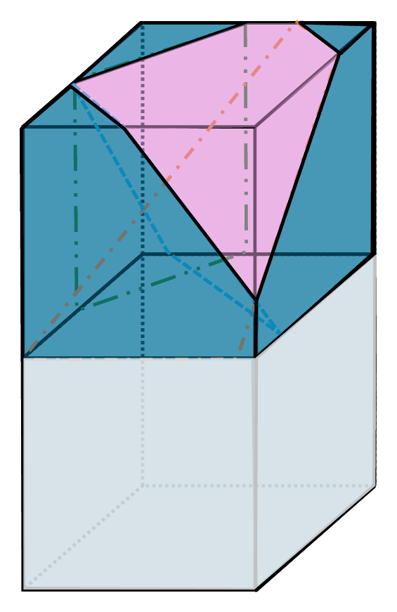
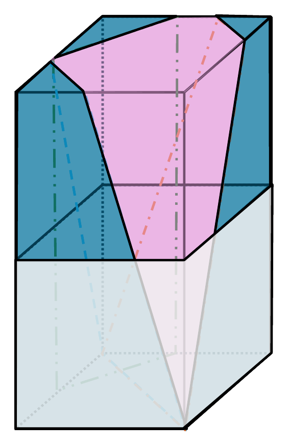
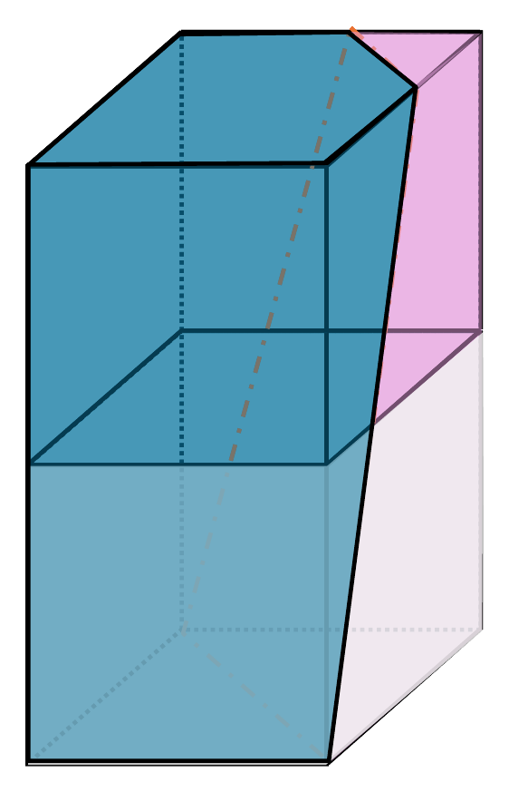
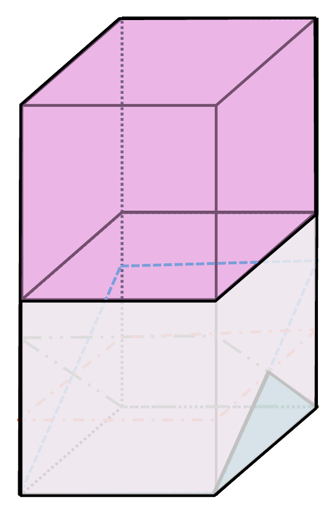
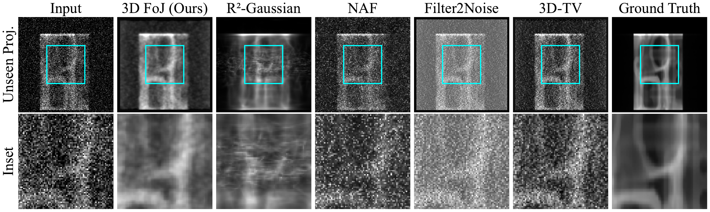
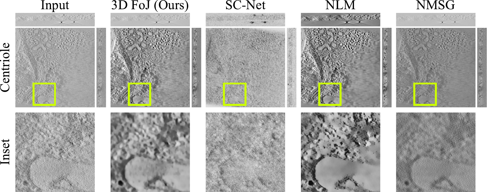
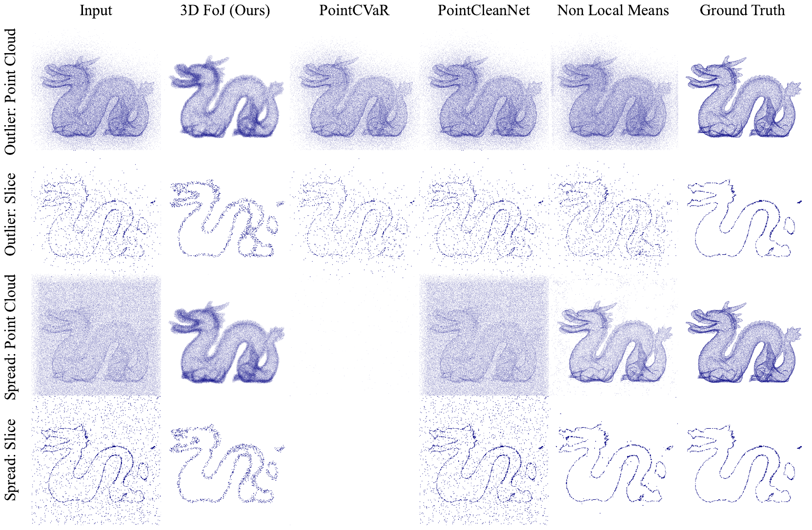

Training-free by design
An explicit geometric prior avoids the need for clean training volumes and reduces the risk of learned hallucination.
Overview
Volume denoising is a foundational problem in computational imaging, where many 3D inverse problems face severe measurement noise. We introduce a fully volumetric 3D Field of Junctions (3D FoJ): an explicit representation that fits junctions of 3D wedges to overlapping patches while encouraging global consistency.
3D FoJ requires no training data, preserves sharp edges and corners under low signal-to-noise ratio, and acts as a drop-in denoising representation for projected or proximal gradient methods. Across low-dose X-ray CT, cryogenic electron tomography, and noisy point clouds, it outperforms the evaluated classical, untrained neural, and noisy-example-trained denoisers.
An explicit geometric prior avoids the need for clean training volumes and reduces the risk of learned hallucination.
Intersecting planes model sharp corners, straight or bent boundaries, curved surfaces, and constant regions in one representation.
Use 3D FoJ directly as a denoiser or as a projected/proximal step in a wider volumetric reconstruction loop.
Method
Each overlapping 3D patch is divided by intersecting planes into uniform-valued wedges. Joint optimization aligns both geometry and appearance across neighboring patches.




Moving the shared vertex and plane orientations gives one model enough flexibility to represent corners, edges, bends, and homogeneous regions.
Represent the volume as overlapping 3D patches.
Fit each patch's junction geometry and wedge values.
Jointly encourage boundary and color consistency.
Average overlapping predictions into a clean volume.
Results
Explore representative comparisons from the paper.



Citation
@inproceedings{kim2026three,
title = {3D Field of Junctions: A Noise-Robust, Training-Free
Structural Prior for Volumetric Inverse Problems},
author = {Kim, Namhoon and Moeini, Narges and Romberg, Justin
and Fridovich-Keil, Sara},
booktitle = {European Conference on Computer Vision (ECCV)},
year = {2026}
}